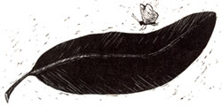
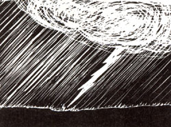
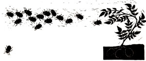

Bits and Pieces
Swarms of a usually rare, small white butterfly are gobbling up drug profits in Peru, where illegal coca growers are battling to save their crops from the insect. Known locally as malumbia, but otherwise classified by scientists as Eloria noyesi, the tiny butterfly eats nothing but coca leaves and this year has appeared in unprecedented numbers. Many growers have resorted to spraying their plants with DDT to eradicate the winged drug buster. Government officials, on the other hand, are considering raising large numbers of the butterfly and dropping them over remote growing areas.
Flash Fertility
Although nitrogen accounts for about 78% of our atmosphere, it isn't available or useful to plants until it's "fixed," or combined with other elements to make it biologically "digestible." Until recently, scientists have believed that a handful of specialized organisms, among them bacteria on the roots of such plants as peas and alfalfa, were primarily responsible for producing fixed nitrogen. Now, however, a research team has found evidence that suggests lightning may yield as much as half the fixed nitrogen in air. Lightning discharges ionize the air, producing nitrogen oxide, which then reacts with ozone to produce NO 2 and molecular oxy gen, usable to plants and animals. Though the process was known previously, it was thought to be responsible for no more than 3% of atmospheric fixed nitrogen.
Organic Agriculture Hot Line
At least 30,000 of the country's 2.1 million farmers raise their crops without using toxic herbicides and pesticides, says the USDA, and this number is increasing rapidly. To satisfy the burgeoning demand for general and technical support in sustainable agriculture, USDA has established an information center, known as ATTRA (Appropriate Technology Transfer for Rural Areas), and has set up a toll-free access number: 800/346-9140. ATTRA's staff includes experts in such fields as agricultural economics and marketing, soil science and pest control. For more information on ATTRA, or on virtually any aspect of sustainable agriculture, call ATTRA at 800/346-9140 any weekday between 8 a.m. and 5 p.m. central time.
Forest Arson
In 1987, more than 2 million acres of national forestland burned, making it the worst year since 1929, according to the U.S. Forest Service. In the West, drought and lightning were the primary culprits. But it's a different story in the Southeast. There, 70% of last year's 15,571 fires (which destroyed some half-million acres) were attributed to arson. Forest arson has been particularly widespread in the South for generations. Investigators say arsonists set forests ablaze for varying reasons: to get revenge on someone, to strike a blow at the state or federal government, to generate excitement or-ironically-to make money ($3.35 an hour) fighting fires!
Stream Watch
Local and state agencies don't have the money or manpower to monitor all our nation's streams, so in many cases critical pollution problems persist unknown to the authorities that could help solve them. At the same time, hikers and other outdoor enthusiasts often are the first to come across such situations-but don't know who to contact to report a problem. To help bring the two forces together, The Izaak Walton League has published "A Citizen's Directory for Water Quality Abuses." The booklet provides state environmental agency phone numbers for reporting pollution emergencies and for getting information about streams and water quality. It also describes how to recognize different kinds of water pollution and suggests ways to help on-site. For a copy of the directory, send $1 to The Izaak Walton League of America, 1701 N. Fort Myer Dr., Arlington, VA 22209.
Potato Self-Defense
Scientists have succeeded in producing a hybrid potato plant that manufactures its own insect repellent. While examining the properties of some 1,000 different types of wild potatoes, a USDA team found that the leaves of one species-Solanum chacoense- contained high levels of leptine. This natural toxin deters even the Colorado potato beetle, this country's leading potato pest. Chacoense produces only very small tubers, but the researchers successfully fused cells from the wild species with those from commercial types and then grew the fused cells into hybrid plants that produce acceptably large potatoes (though still only about half the size of market varieties). Leptine in big doses can be toxic to humans, but the hybrid plants produce the chemical only in their leaves.
Aerial Abuse
Residents in many rural areas have long complained of disruptive military training flights over their homes, land and livestock. To help people direct their complaints to the proper authorities and to provide citizens with an effective voice of protest, Citizen Alert and the Rural Coalition have set up a 24-hour toll-free telephone reporting service called Skyguard. Skyguard operators will catalogue complaints, refer callers to legal help and answer questions about military flight operations. To report an incident or to request a jet identification and information brochure, call 800/SKY-GUARD or write Skyguard, c/o Citizen Alert, P.O. Box 5391, Reno, NV 89513.
Energy Economics
Our national economic competitiveness is largely determined by how efficiently we use energy, according to a report issued by the Worldwatch Institute. "If American industries, buildings and transportation were as energy efficient as Japan's, the United States could trim $200 billion from its annual fuel bill," say Christopher Flavin and Alan B. Durning, co-authors of Building on Success: The Age of Energy Efficiency. "Nations that want to compete effectively in international markets have no choice but to raise their energy efficiency to at least the Japanese level." Most Western industrial nations have improved their energy efficiency by 15% to 30% since 1973, saving more energy than they gained from all new sources of supply. But we still waste enormous quantities. "As much energy leaks through American windows every year as flows through the Alaskan pipeline," write the authors. The report, one of a continuing series of excellent analyses of globally important issues, is available for $4 postpaid from the Worldwatch Institute, 1776 Massachusetts Ave. N.W., Washington, DC 20036.
Home Cool Home
Homeowners looking for ways to beat the heat without battering their budgets may be interested in either of two free fact sheets offered by the Conservation and Renewable Energy Inquiry and Referral Service (CAREIRS). "Passive Cooling" suggests alternatives to air conditioning-insulating, shading and other cost-effective heat stoppers. "Moisture Control In Homes" discusses the symptoms and solutions to moisture problems, which in addition to causing mildew and wood rot are often the culprits behind high utility bills. Ask for either or both papers by writing CAREIRS, P.O. Box 8900, Silver Spring, MD 20907 or calling the service's toll-free number: 800/523-2929 (or, from Alaska or Hawaii, 800/233-3071).
|
 |
 |
 |